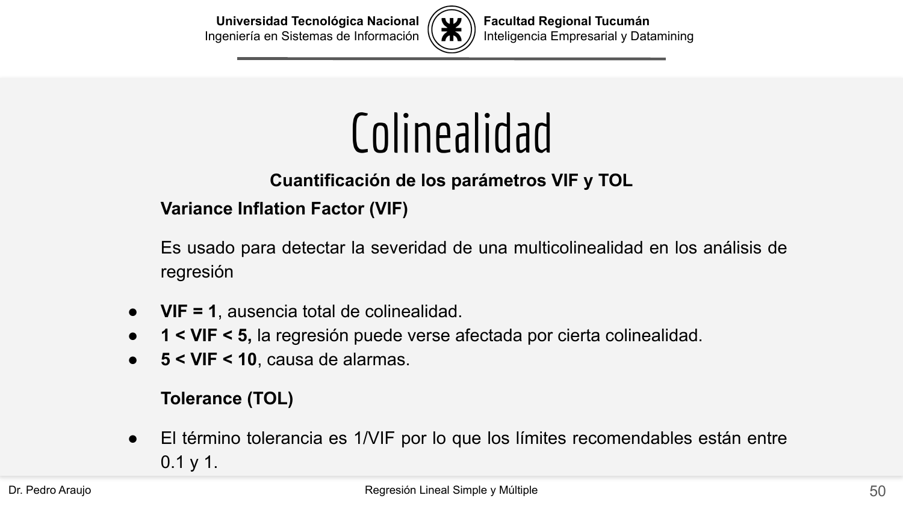
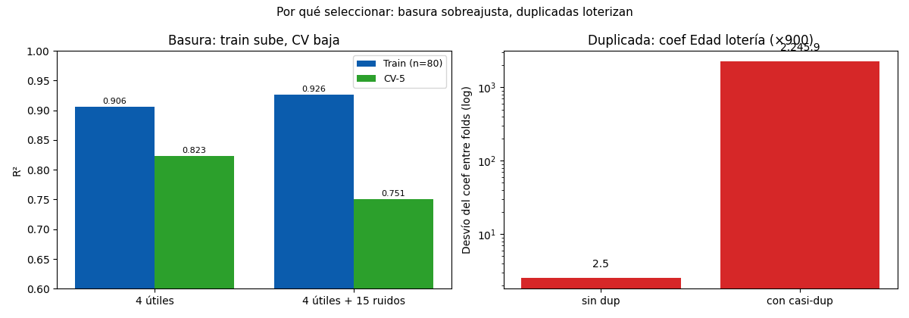

Bloque D · Regresión lineal, selección y regularización · Lección 0019 · mar 22 sep
Por qué seleccionar: basura, duplicadas y constantes
Win de hoy: ver con números por qué sobran columnas: 15 ruidos bajan el CV de 0,823 a 0,751,
una casi-duplicada multiplica ×900 la lotería del coeficiente, y Cylinders aporta cero.
1 · Las 3 basuras (Toyota las trae todas)
- Ruido: columnas sin señal (acá fabricadas: 15 gaussianas). El modelo gasta grados de libertad memorizándolas.
- Duplicadas: la misma info dos veces (
Age_08_04yMfg_Year, r = −0,98 en 0012). El modelo no sabe a cuál creerle. - Constantes:
Cylinders = 4siempre (0004). Sin variación no hay explicación; su coeficiente es 0 decorativo. - IDs:
Id(1…1436, todos distintos) memoriza filas en vez de aprender patrones: fuera siempre, como las constantes. Y el dropout se hace consciente: cada baja se justifica (basura medida, p alto, sinsentido de negocio) — nunca porque «total sobra».
2 · Demo basura: train sube, CV baja (n = 80)
Con pocos autos (80) y 4 útiles + 15 ruidos, la regresión memoriza: R² de train sube 0,906 → 0,926 pero el CV-5 baja 0,823 → 0,751. Siete puntos perdidos por columnas que no dicen nada: el sobreajuste de la 0001, ahora con culpable identificado. (Con 1436 autos el daño se diluye; con 80 se ve.) La cátedra lo nombra igual en su clase de regresión (p. 17): hay overfitting «dado que el modelo se ajusta a las peculiaridades aleatorias de la muestra».
3 · Demo duplicada: el coeficiente lotería (×900)
Agrego Edad2 = Edad + ruido tiny (correlación 0,9999): el coeficiente de Edad salta entre folds con
desvío 2,5 → 2.245,9 (×900). Mismo R², coeficientes ininterpretables: lo que una fold le suma a Edad
se lo resta a Edad2. El
VIF ≈ 145.000
lo confirma (sano: < 5–10). Moraleja: duplicadas no rompen la predicción; rompen la explicación.

Compará escalas: la cátedra enciende la alarma en VIF = 10; nuestra casi-duplicada dio VIF ≈ 145.000, cuatro órdenes de magnitud fuera de escala (su TOL ≈ 0,000007, muy por debajo del mínimo 0,1). No es «un poco de colinealidad»: es la misma columna dos veces.
4 · Figura: el costo de no elegir

Regenerar la figura (mismo resultado versionado en assets/img/toyota/):
python3 scripts/make_figures.py --only por-que-seleccionar5 · Quiz (auto-chequeo inmediato)
6 · Fuente primaria y cierre
Para profundizar (1 fuente): James et al., An Introduction to Statistical Learning — capítulo de selección de variables (statlearning.com, PDF libre; también en RESOURCES.md del curso). La referencia teórica de la selección en el Bloque D.
¿Algo no quedó claro? Preguntame al agente: qué basura tiene tu dataset, cómo leer un VIF, o cuándo 4 columnas le ganan a 37. Esa pregunta vale más que releer.
Orden Bloque D: siguiente en el bloque, 0020 · Best subset y stepwise: buscar el mejor equipo: mañana mismo, cómo buscar el equipo (best subset, AIC/BIC, forward + backward).